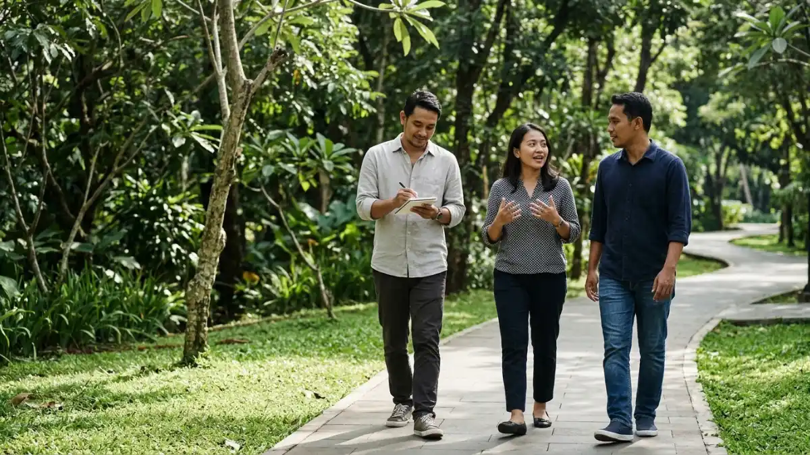

Meeting outdoor menciptakan suasana diskusi yang hangat, rileks,
dan mempererat kekompakan antaranggota tim.
Meeting outdoor menciptakan suasana diskusi yang hangat, rileks,
dan mempererat kekompakan antaranggota tim.
Manfaat meeting outdoor mencakup ide yang lebih kreatif, suasana diskusi yang lebih terbuka, stres kerja yang lebih rendah, dan hubungan tim yang lebih erat.
- Peserta yang berjalan kaki dalam studi Stanford 2014 menghasilkan ide lebih orisinal, dengan peningkatan kreativitas lebih dari 80 persen.
- Studi tahun 2021 melaporkan manfaat kesehatan mental yang bertahan lama pada karyawan yang berbicara sambil berjalan di alam.
- Berjalan dan berdiskusi berdampingan membantu menurunkan jarak formal antaranggota tim.
- Manfaat fisik bersifat tambahan, sedangkan manfaat utamanya ada pada pikiran dan hubungan kerja.
- Hasil terbaik muncul bila format dipilih sesuai tujuan dan dilakukan secara rutin.
- Apakah Meeting Outdoor Benar-Benar Meningkatkan Kreativitas?
- Bagaimana Meeting Outdoor Membantu Mengurangi Stres Kerja?
- Mengapa Meeting Outdoor Memperkuat Kekompakan Tim?
- Manfaat Kesehatan Fisik dari Meeting Outdoor
- Manfaat Meeting Outdoor bagi Perusahaan dan Organisasi
- Apa Batasan Manfaat Meeting Outdoor?
- Bagaimana Mendapat Manfaat Maksimal dari Meeting Outdoor?
- Kesimpulan
- FAQ
Apakah Meeting Outdoor Benar-Benar Meningkatkan Kreativitas?
Ya, bukti riset menunjukkan berjalan kaki, termasuk di luar ruangan, dapat memicu ide yang lebih orisinal, meski hasilnya bergantung pada cara rapat diatur.
Studi Stanford tahun 2014 sering dijadikan rujukan utama. Menurut ulasan Psychology Today pada Juni 2025, peserta yang berjalan, baik di treadmill maupun di luar ruangan, menghasilkan ide jauh lebih orisinal daripada peserta yang duduk, dengan peningkatan kreativitas lebih dari 80 persen. Berjalan di luar ruangan dan tidak dalam garis lurus cenderung memicu respons yang paling baru.
Bagi tim, artinya sesi brainstorming, perancangan program, dan pencarian solusi adalah kandidat yang cocok untuk dibawa keluar ruangan.
Perubahan pemandangan dan gerak tubuh memberi otak jeda dari rutinitas layar, sehingga hubungan antargagasan lebih mudah muncul.
Meski begitu, studi tersebut menguji aktivitas berjalan pada tugas berpikir tertentu, bukan rapat kerja yang lengkap.
Tim sebaiknya mencoba sendiri dan membandingkan hasilnya dengan rapat dalam ruangan sebelum menjadikannya kebiasaan.
Bagaimana Meeting Outdoor Membantu Mengurangi Stres Kerja?
Meeting outdoor membantu mengurangi stres karena paparan lingkungan hijau, udara segar, dan gerak ringan memberi jeda mental dari tekanan layar dan ruang rapat yang padat.
Sebuah studi tahun 2021 di Journal of Environmental Psychology, seperti diulas Psychology Today, mengikuti karyawan dengan keluhan terkait stres yang menjalani sesi coaching sambil berjalan di alam secara berkala.
Manfaat kesehatan mentalnya signifikan dan bertahan lama, meski kesehatan fisik belum menunjukkan perbaikan langsung.
Teori pemulihan atensi atau attention restoration theory menjelaskan bahwa lingkungan alami membantu menyegarkan kemampuan fokus setelah kerja mental yang berat.
Karena itu, rapat di taman atau area camping dapat terasa lebih ringan dibanding rapat panjang di ruangan yang sama setiap minggu.
Perlu diingat bahwa meeting outdoor bukan pengganti layanan kesehatan jiwa. Bila karyawan mengalami tekanan berat yang berkelanjutan, dukungan profesional tetap diperlukan.

Aktivitas walking meeting di area terbuka hijau membantu merangsang kreativitas dan mencetuskan ide-ide baru.Mengapa Meeting Outdoor Memperkuat Kekompakan Tim?
Meeting outdoor memperkuat kekompakan tim karena berjalan atau duduk bersama di ruang terbuka menurunkan jarak formal antaranggota dan mendorong percakapan yang lebih jujur.
Menurut Julia Milner, pakar kepemimpinan yang dikutip Welcome to the Jungle pada Oktober 2023, berjalan berdampingan dapat menumbuhkan ikatan yang lebih dalam antarrekan kerja.
Ia menyebut penularan emosi positif sebagai salah satu pendorongnya, karena ide baru muncul dari interaksi yang hangat.
Suasana yang lebih akrab juga membantu rasa aman psikologis. Anggota tim yang merasa aman cenderung lebih berani menyampaikan gagasan atau kritik membangun.
Studi pilot tahun 2022 oleh Anna Bornioli di jurnal Cities & Health menunjukkan walking meeting dapat mendukung kesehatan mental dan emosional pekerja, terutama pada tim remote atau hybrid. Rute yang tenang, alami, dan bebas lalu lintas dinilai paling ideal.
Manfaat Kesehatan Fisik dari Meeting Outdoor
Meeting outdoor menambah gerak tubuh dan paparan sinar matahari di tengah hari kerja yang biasanya didominasi duduk, sehingga dapat mendukung kebugaran ringan peserta.
Peneliti Alberto Caban-Martinez dari Universitas Miami, seperti dikutip CBS News dan CNN, menyebut studi pilot timnya menunjukkan bahwa mengubah sebagian waktu kerja menjadi walking meeting bermanfaat bagi kesehatan kardiovaskular dan berpotensi bagi produktivitas.
Ulasan Psychology Today juga mencatat bahwa efek jalan singkat di luar ruangan pada tubuh tergolong kecil, tetapi tetap terasa dan lebih mudah dijangkau dibanding sesi olahraga terstruktur.
Karena itu, manfaat fisik sebaiknya dipandang sebagai bonus. Tujuan utama meeting outdoor tetap kualitas diskusi, dan tim tidak perlu menargetkan jumlah langkah tertentu.
Manfaat Meeting Outdoor bagi Perusahaan dan Organisasi
Bagi perusahaan, meeting outdoor menawarkan cara berbiaya relatif rendah untuk menyegarkan budaya kerja, meningkatkan keterlibatan karyawan, dan membuka ruang diskusi yang sulit tercipta di kantor.
Ulasan Charitymiles menyebut walking meeting sebagai alat berbiaya rendah dengan bukti yang menjanjikan.
Dalam studi pilot dengan karyawan kantor selama beberapa minggu, format ini dinilai dapat diterima dan berkelanjutan, bukan sekadar hal baru yang cepat hilang.
Untuk organisasi, manfaatnya terlihat pada kualitas percakapan satu lawan satu, sesi umpan balik, dan perencanaan program.
Atasan yang berjalan bersama anggota timnya sering memperoleh jawaban yang lebih terbuka dibanding di ruang rapat formal.
Format yang lebih besar seperti retreat atau rapat di area camping juga dapat menggabungkan perencanaan dan kebersamaan sekaligus. Pengertian dan jenis meeting outdoor membantu organisasi memilih format yang paling sesuai dengan skala timnya.
Apa Batasan Manfaat Meeting Outdoor?
Manfaat meeting outdoor tidak otomatis muncul, karena hasilnya bergantung pada tujuan rapat, kualitas lokasi, ukuran kelompok, dan kesiapan peserta menerima format yang berbeda.
Ulasan Charitymiles menegaskan bahwa bukti yang ada mendukung walking meeting sebagai alat yang menjanjikan, tetapi tidak mendukung penggunaannya sebagai pengganti semua rapat. Presentasi berbasis layar dan pembahasan data sensitif biasanya lebih cocok di dalam ruangan.
Sebagian peserta mungkin merasa kurang nyaman karena alasan fisik, kebiasaan, atau anggapan bahwa rapat sambil berjalan terkesan kurang serius.
Menurut Milner, keraguan semacam ini dapat diatasi dengan mengajak peserta mencoba satu kali dan meninjau hasilnya bersama.
Cuaca dan kebisingan juga dapat mengurangi manfaat. Lokasi yang tidak disiapkan dengan baik bisa membuat rapat justru lebih melelahkan daripada di kantor.
Bagaimana Mendapat Manfaat Maksimal dari Meeting Outdoor?
Manfaat maksimal diperoleh dengan memilih agenda yang cocok, membatasi peserta, memilih lokasi nyaman, dan menjadikan meeting outdoor kebiasaan rutin, bukan sekadar percobaan sekali.
Milner menyebut bahwa walking meeting yang dilakukan sesekali lalu dihentikan akan kehilangan efektivitasnya.
Wendy Cole dari iMastery menambahkan bahwa satu walking meeting per minggu lebih baik daripada tidak sama sekali, dan penerapannya sebaiknya dimulai dari tujuan yang kecil.
Langkah praktisnya dimulai dari persiapan. Tim dapat mengikuti cara menyiapkan meeting outdoor yang efektif agar agenda, peran, dan perlengkapan sudah jelas sebelum hari pelaksanaan.
Untuk tim di Jawa Timur, memilih lokasi meeting outdoor di Kota Batu dan perlengkapannya membantu rapat berlangsung nyaman dengan suasana sejuk dan area terbuka yang memadai.
Kesimpulan
Manfaat meeting outdoor paling terasa pada kreativitas, kesehatan mental, dan kekompakan tim, asalkan format sesuai dengan tujuan dan dilakukan secara konsisten.
- Gunakan meeting outdoor untuk brainstorming, umpan balik, dan perencanaan.
- Batasi jumlah peserta dan siapkan rencana cadangan cuaca.
- Evaluasi hasilnya secara berkala dan jadikan rutin bila terbukti membantu.
FAQ